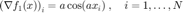
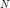
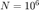
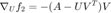
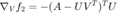
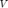
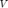

Poblano Toolbox for MATLAB: Examples
This section describes the examples provided with Poblano. These examples can be used as templates for other function/gradient M-files.
Contents
Solving a Problem Using Poblano
To solve a problem using Poblano, the following steps are performed:
- Step 1: Create M-file for objective and gradient. An M-file which takes a vector as input and provides a scalar function value and gradient vector (the same size as the input) must be provided to the Poblano optimizers.
- Step 2: Call the optimizer. One of the Poblano optimizers is called, taking an anonymous function handle to the function to be minimized, a starting point, and an optional set of optimizer parameters as inputs.
Poblano provides two example function/gradient M-files:
- example1: simple multivariate function
- example2: more complicated function of a matrix variable
Example 1: Multivariate Sum
The following example is a simple multivariate function,  , that can be minimized using Poblano:
, that can be minimized using Poblano:


where  is a scalar parameter.
is a scalar parameter.
Listed below are the contents of the example1.m M-file distributed with the Poblano code. This is an example of a self-contained function requiring a vector of independent variables and an optional scalar input parameter for .
function [f,g]=example1(x,a)
if nargin < 2, a = 1; end
f = sum(sin(a*x));
g = a*cos(a*x);The following presents a call to ncg optimizer using the default parameters (see NCG method documentation for more details) along with the information displayed and output return by Poblano. By default, at each iteration Poblano displays the number of function evaluations (FuncEvals), the function value at the current iterate (F(X)), and the Euclidean norm of the scaled gradient at the current iterate (|||G(X)||||||/N|, where N is the size of X) for each iteration. The output of Poblano optimizers is a Matlab structure containing the solution. See the Output Parameters documentation for more details.
out = ncg(@(x) example1(x,3), pi/4)
Iter FuncEvals F(X) ||G(X)||/N
------ --------- ---------------- ----------------
0 1 0.70710678 2.12132034
1 14 -0.99998885 0.01416497
2 16 -1.00000000 0.00000147
out =
struct with fields:
Params: [1×1 inputParser]
ExitFlag: 0
ExitDescription: 'Successful termination based on StopTol'
X: 70.6858
F: -1.0000
G: -1.4734e-06
FuncEvals: 16
Iters: 2
The problem dimension, , of example1 is determined by the size of the initial guess. For example, to solve a problem with , simply use an initial guess vector of size when calling the Poblano optimizer:
randn('state',0); x0 = randn(1e6,1); out = ncg(@(x) example1(x,3), x0, 'Display', 'final')
Iter FuncEvals F(X) ||G(X)||/N
------ --------- ---------------- ----------------
15 60 -999993.22770173 0.00000649
out =
struct with fields:
Params: [1×1 inputParser]
ExitFlag: 0
ExitDescription: 'Successful termination based on StopTol'
X: [1000000×1 double]
F: -9.9999e+05
G: [1000000×1 double]
FuncEvals: 60
Iters: 15
Example 2: Matrix Decomposition
The following example is a more complicated function involving matrix variables. As the Poblano methods require scalar functions with vector inputs, variable matrices must be reshaped into vectors first. The problem in this example is to find a rank-$k$ decomposition,  , of a
, of a  matrix, , which minimizes the Frobenius norm of the fit
matrix, , which minimizes the Frobenius norm of the fit



where  is a matrix with rank ,
is a matrix with rank ,  , and . This problem can be solved using Poblano by providing an M-file that computes the function and gradient shown above but that takes
, and . This problem can be solved using Poblano by providing an M-file that computes the function and gradient shown above but that takes  and  as input in vectorized form.
and  as input in vectorized form.
This problem can be solved using Poblano by providing an M-?le that computes the function and gradient shown above but that takes U and V as input in vectorized form.
Listed below are the contents of the example2.m M-file distributed with the Poblano code. Note that the input Data is required and is a structure containing the matrix to be decomposed, , and the desired rank, . This example also illustrates how the vectorized form of the factor matrices, and , are converted to matrix form for the function and gradient computations.
function [f,g]=example2(x,Data)
% Data setup
[m,n] = size(Data.A);
k = Data.rank;
U = reshape(x(1:m*k),m,k);
V = reshape(x(m*k+1:m*k+n*k),n,k); % Function value (residual)
AmUVt = Data.A-U*V';
f = 0.5*norm(AmUVt,'fro')^2; % First derivatives computed in matrix form
g = zeros((m+n)*k,1);
g(1:m*k) = -reshape(AmUVt*V,m*k,1);
g(m*k+1:end) = -reshape(AmUVt'*U,n*k,1);Included with Poblano are two helper functions and which can be used to generate problems instances along with starting points (example2_init.m) and extract the factors and from a solution vector (example2_extract.m). We show an example of their use below.
randn('state',0); m = 4; n = 3; k = 2; [x0,Data] = example2_init(m,n,k) out = ncg(@(x) example2(x,Data), x0, 'RelFuncTol', 1e-16, 'StopTol', 1e-8, ... 'MaxFuncEvals',1000,'Display','final')
x0 =
-0.5883
2.1832
-0.1364
0.1139
1.0668
0.0593
-0.0956
-0.8323
0.2944
-1.3362
0.7143
1.6236
-0.6918
0.8580
Data =
struct with fields:
rank: 2
A: [4×3 double]
Iter FuncEvals F(X) ||G(X)||/N
------ --------- ---------------- ----------------
29 67 0.28420491 0.00000001
out =
struct with fields:
Params: [1×1 inputParser]
ExitFlag: 0
ExitDescription: 'Successful termination based on StopTol'
X: [14×1 double]
F: 0.2842
G: [14×1 double]
FuncEvals: 67
Iters: 29
Extracting the factors from the solution, we see that we have found a solution, since the the Euclidean norm of the difference between the matrix and the approximate solution is equal to the the  singular value of [1, Theorem 2.5.3].
singular value of [1, Theorem 2.5.3].
[U,V] = example2_extract(4,3,2,out.X); norm_diff = norm(Data.A-U*V') sv = svd(Data.A); sv_k_plus_1 = sv(k+1)
norm_diff =
0.7539
sv_k_plus_1 =
0.7539
References
[1] Golub, G. H. and Loan, C. F. V. (1996). Matrix Computations. Johns Hopkins University Press.